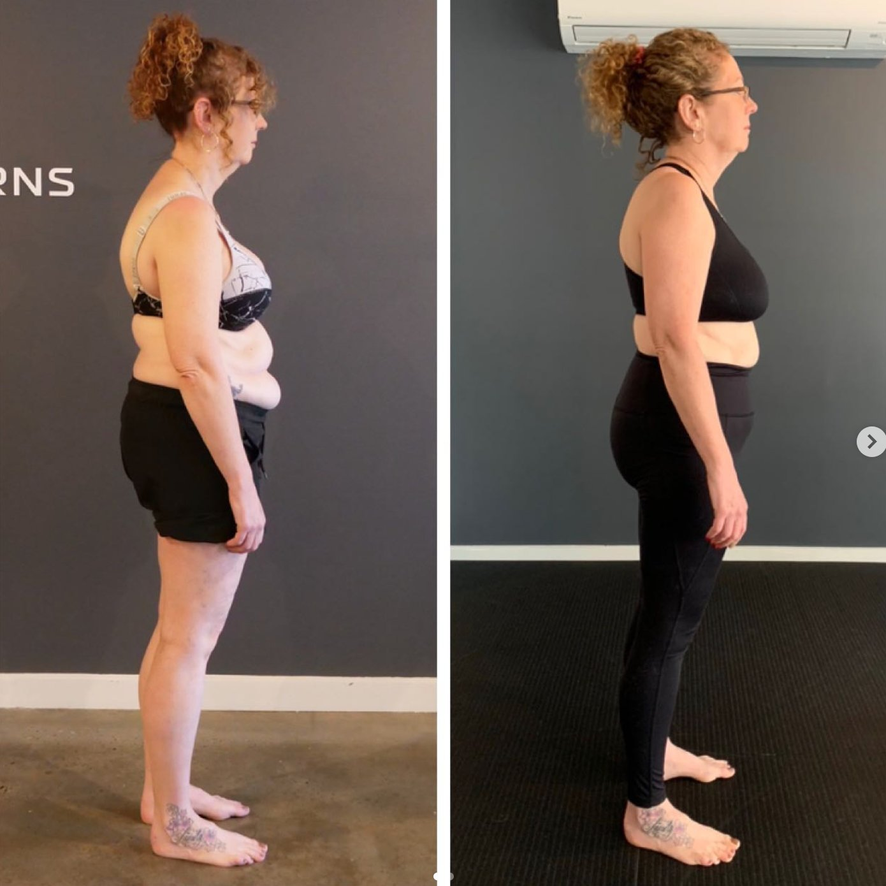
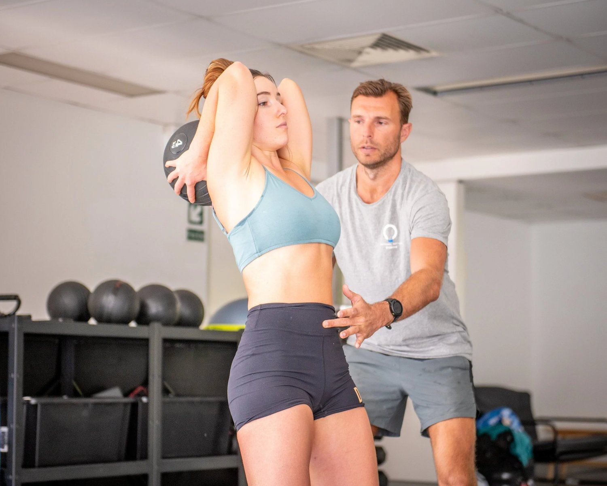

A neck hump is more than a cosmetic concern. It often indicates deeper issues related to posture and movement patterns. Common terms for a neck hump include: widow’s hump, dowager's hump, or hunchback neck.
This condition can significantly impact your quality of life, leading to discomfort, reduced range of motion, and self-consciousness. Understanding how to get rid of a neck hump involves much more than simply stretching or trying quick fixes. It requires a deep dive into your body's movement patterns and overall posture.
One of the key factors leading to a neck hump is an imbalance in the movement of the spine and pelvis. When your pelvis doesn't rotate properly, your lower spine has to compensate by creating more movement and flexibility. This extra movement can cause your upper spine to develop kyphosis, which exacerbates the appearance of a hump at the base of the neck.
This is a common issue in today's world. Prolonged sitting and poor posture, often because of technology use, contribute to what many call a tech hump.
Understanding the Root Causes
Before jumping into neck hump exercises, it's important to understand the root causes of this condition. Neck issues generally do not cause a neck hump on their own; it's a symptom of a whole-body problem.
When certain muscles or joints aren't working correctly, it forces other parts of your body to compensate. This leads to imbalances and compensations. If your hips aren't rotating as they should, your spine will have to pick up the slack, often resulting in a hunch in the neck.
Another critical factor to consider is muscle imbalance. If the muscles at the base of the neck are weak or tight, they can pull the spine out of alignment. This contributes to the development of a visible hump. Over time, these imbalances can lead to structural changes in the spine, which are much harder to correct once they become ingrained.

Why Stretching Won’t Solve a Neck Hump
Many people assume that the best way to correct a neck hump is through stretching. Stretching will not fix the problem because it does not address the root cause. Imbalanced movement patterns cause the hump to form in the first place we must address these imbalances.
When you stretch a muscle, you're only addressing the superficial layers of tissue. You are not reaching the deeper structures connected to the bones. This can create more imbalances between surface tissues and deeper tissues, which can make the hunchback neck even worse.
Moreover, you can only stretch tissues that are allowing you to stretch them. If there's an underlying restriction or imbalance, stretching can actually exacerbate the problem by increasing the discrepancy between flexible and inflexible areas. This can lead to further misalignment and a more pronounced hump.
Stop focusing on stretching as a solution. The key to ' how to fix a neck hump' lies in correcting the movement patterns that led to the issue in the first place.
Correcting Movement Patterns with Functional Patterns
The most effective way to get rid of a neck hump is to identify and correct the movement patterns that are causing it. This involves looking at how your body moves as a whole, not just focusing on the neck. For example, if your spine is flexing too much at the upper cervical area, it’s crucial to understand why.
What movements are happening—or not happening—that are causing this maladaptation? Are your hips rotating properly? Is your core engaged? These are the types of questions that we need to answer to fix a hunched neck.
One common issue is the forward head posture, which is often a result of a weak neck. When the neck muscles are weak, the head naturally shifts forward, creating a hunch and the appearance of a neck hump.
Strengthening the neck muscles is crucial, but we must do this in a way that integrates with the rest of your body. Simply doing neck exercises in isolation won't solve the problem. You need to work on improving your overall posture and movement patterns.

The Importance of Posture
Posture plays a significant role in the development of a neck hump. Head posture where the head sits forward puts extra strain on the upper spine and can lead to the formation of a hump.
This is why improving your posture is key to getting rid of a neck hump fast. Most people associate good posture with correct sitting posture, a solid office chair and ergonomics.
However, correct posture isn't exclusively about sitting or standing up straight. Good posture includes factors like the curvature of the upper spine, symmetry and how well your body moves as a unit. Proper posture involves a balance between different parts of your body. It includes ensuring that no one area is over-compensating for another.
This is particularly important for older adults. The aged population may be more prone to compression fractures or other medical conditions that can affect the spine. For these individuals, working with a biomechanics or physical therapist can be incredibly beneficial. It aids in developing a plan to improve posture and reduce the appearance of a neck hump.
Exercises to Get Rid of a Neck Hump
While neck hump exercises alone won’t fix the problem, they can be a valuable part of a broader treatment plan.
One common exercise is the chin tuck, which allegedly helps to strengthen the muscles at the base of your neck and improve head posture. To do a chin tuck, tuck your chin in towards your chest, creating a double chin. Hold this position for a few seconds, then release. Repeat several times throughout the day to help train your muscles to hold your head in the correct position.
Another helpful exercise is the thoracic extension, which targets the upper thoracic spine. To do this exercise, sit in a chair with your feet flat on the ground. Place your hands behind your head and gently arch your upper back over the back of the chair, extending your spine. This helps to counteract the forward curvature that contributes to a hunchback neck.
Integrating Movement Patterns (how to get rid of a dowager hump)
Exercises like the chin tuck and thoracic extension can help but we need to integrate them. Getting the body to move in an integrated manner involves having a holistic movement pattern correction plan.
This means looking at how your body moves as a whole. We then need to make adjustments to ensure that all parts are working together effectively. For example, if your hips are tight or not rotating properly, it can affect the alignment of your entire spine. This can lead to issues like a widows hump neck.
To correct these movement patterns, it's often helpful to work with a functional patterns practitioner. These professionals can assess your movement and posture, identify any imbalances, and develop a plan to correct them. This may involve a combination of exercises, myo fascial release, and lifestyle changes designed to improve your overall posture. They also work to resolve or prevent the formation of a neck hump.

Addressing Medical Conditions
In some cases, a neck hump may relate to underlying medical conditions. This an include a compression fractures or other spinal issues. If you suspect that your neck hump is because of a medical condition, seek professional advice.
Kyphosis, a spinal condition where the upper back becomes excessively rounded, is another frequent culprit.
In older adults, osteoporosis can lead to compression fractures in the vertebrae, resulting in a dowager's hump.
Obesity and endocrine disorders, such as Cushing's syndrome, can also contribute to the development of a neck hump due to abnormal fat deposition or changes in bone structure.
Additionally, congenital conditions and injuries that affect the spine's alignment may lead to a pronounced hump over time.
Even if a medical condition is present, correcting movement patterns and improving posture can significantly reduce a neck hump.
How to Get Rid of a Neck Hump Fast
While there's no overnight solution for getting rid of a neck hump, taking steps to correct your movement patterns and improve your posture can lead to noticeable improvements relatively quickly.
The key is to be consistent with your exercises and to pay attention to your posture throughout the day. Whether you're sitting at a desk, standing in line, or walking, make sure you're engaging your core, keeping your head aligned with your spine, and avoiding slouching.
Conclusion
Correcting a neck hump requires more than just doing a few stretches or exercises.
Correct a neck hump is about understanding the underlying causes and addressing them. We can achieve this through a combination of movement pattern correction and posture improvement. And, if necessary, treatment for any underlying medical conditions.
By taking a holistic approach and focusing on the entire body, not just the neck, you can significantly reduce the appearance of a neck hump and improve your overall quality of life.
Addressing issues present in your movement patters (gait) is a sure way to support spinal health. Ensuring the spine moves optimally and evenly is crucial. It is also important to make sure the body is working as a whole. If part of your body are overworked, it can cause issues such as a hump at the top of your back or neck.